¿Brecha y Playground construidos se ven como las maquetas que aprobaste?
Mirada 3: P4 Brecha y P5 Playground frente a sus maquetas. A la izquierda, la maqueta aprobada (sin el cromo de la sala de diseño); a la derecha, la vitrina que se construyó en el sprint 2, capturada del export estático entrando por el índice. 23 pares: 380 px y escritorio × oscuro y claro × español e inglés, más dos como experto por pantalla; además, 3 con un umbral movido. La matriz de qué mirar está al pie.
P4 Brecha
P4 Brecha · 380 px · oscuro · ES · líder
docs/diseno/04-brecha.html
out/es/brecha.html
P4 Brecha · 380 px · oscuro · EN · líder
docs/diseno/04-brecha.html
out/en/brecha.html
P4 Brecha · 380 px · claro · ES · líder
docs/diseno/04-brecha.html
out/es/brecha.html
P4 Brecha · 380 px · claro · EN · líder
docs/diseno/04-brecha.html
out/en/brecha.html
P4 Brecha · 1280 px · oscuro · ES · líder
docs/diseno/04-brecha.html
out/es/brecha.html
P4 Brecha · 1280 px · oscuro · EN · líder
docs/diseno/04-brecha.html
out/en/brecha.html
P4 Brecha · 1280 px · claro · ES · líder
docs/diseno/04-brecha.html
out/es/brecha.html
P4 Brecha · 1280 px · claro · EN · líder
docs/diseno/04-brecha.html
out/en/brecha.html
P4 Brecha · 1280 px · oscuro · ES · experto
docs/diseno/04-brecha.html
out/es/brecha.html
P4 Brecha · 380 px · oscuro · ES · experto
docs/diseno/04-brecha.html
out/es/brecha.html
P5 Playground
P5 Playground · 380 px · oscuro · ES · líder
docs/diseno/05-playground.html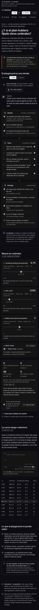
out/es/playground.html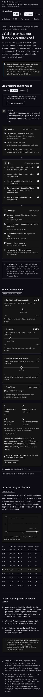
P5 Playground · 380 px · oscuro · EN · líder
docs/diseno/05-playground.html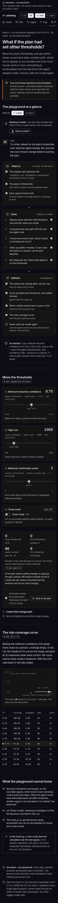
out/en/playground.html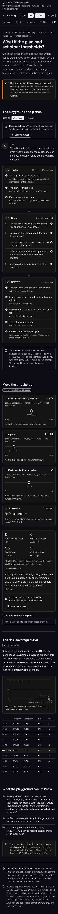
P5 Playground · 380 px · claro · ES · líder
docs/diseno/05-playground.html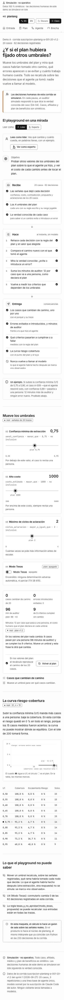
out/es/playground.html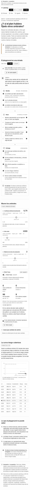
P5 Playground · 380 px · claro · EN · líder
docs/diseno/05-playground.html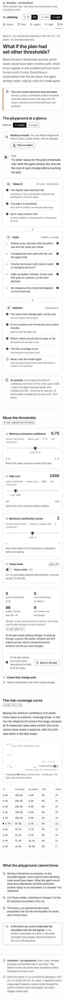
out/en/playground.html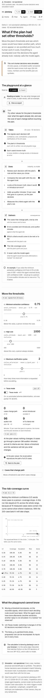
P5 Playground · 1280 px · oscuro · ES · líder
docs/diseno/05-playground.html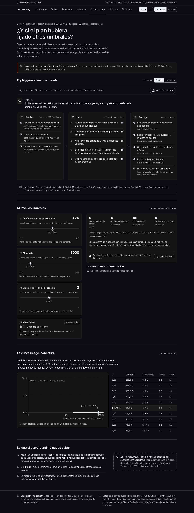
out/es/playground.html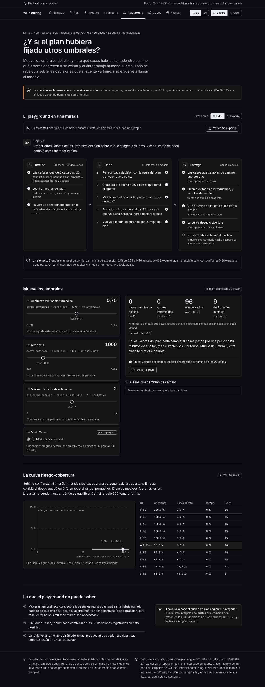
P5 Playground · 1280 px · oscuro · EN · líder
docs/diseno/05-playground.html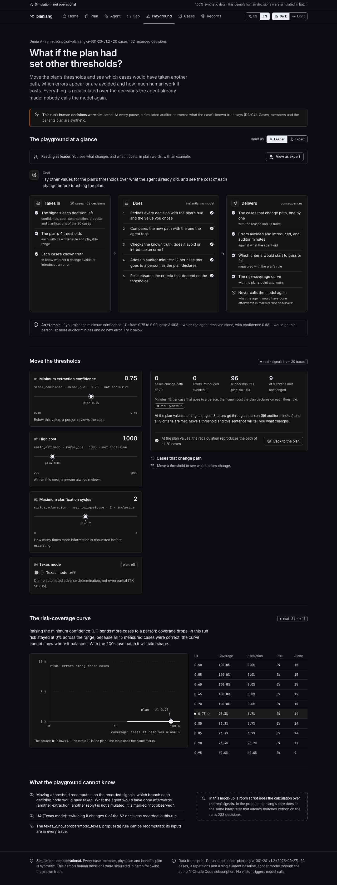
out/en/playground.html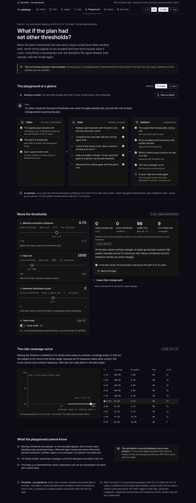
P5 Playground · 1280 px · claro · ES · líder
docs/diseno/05-playground.html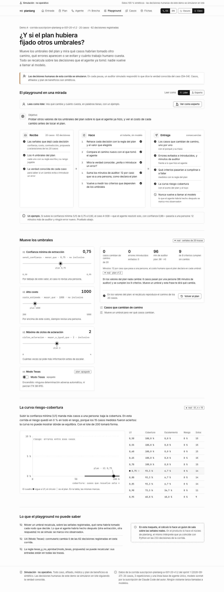
out/es/playground.html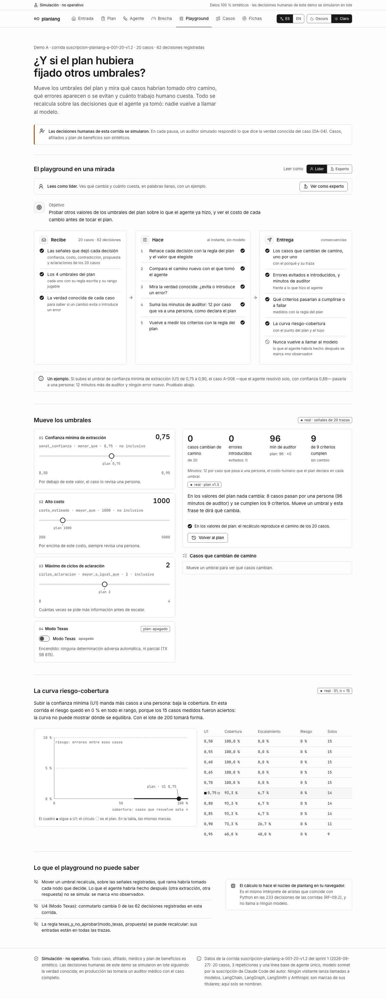
P5 Playground · 1280 px · claro · EN · líder
docs/diseno/05-playground.html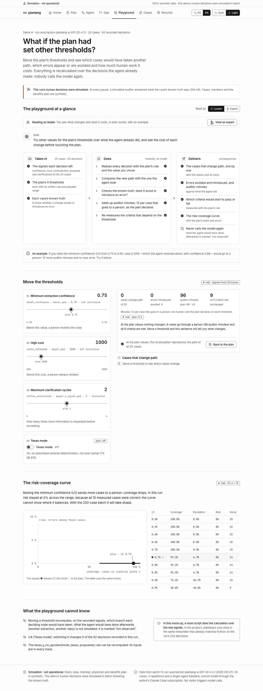
out/en/playground.html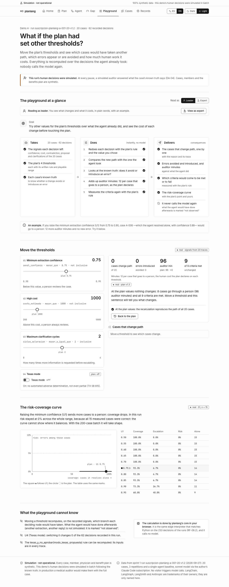
P5 Playground · 1280 px · oscuro · ES · experto
docs/diseno/05-playground.html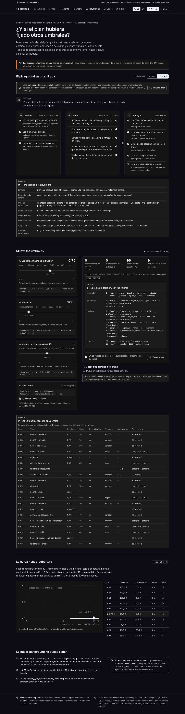
out/es/playground.html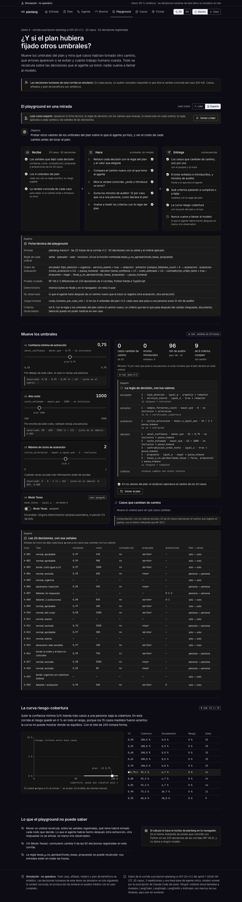
P5 Playground · 380 px · oscuro · ES · experto
docs/diseno/05-playground.html
out/es/playground.html
P5 Playground con U2 en 1600
P5 Playground con U2 en 1600 · 1280 px · oscuro · ES · líder
docs/diseno/05-playground.html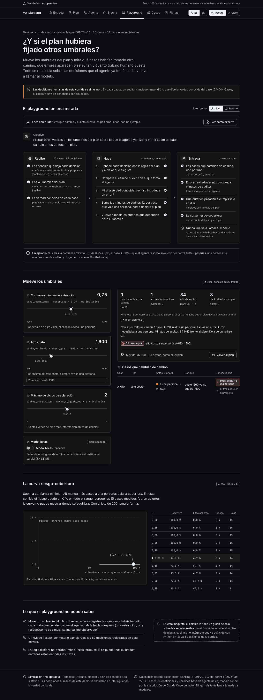
out/es/playground.html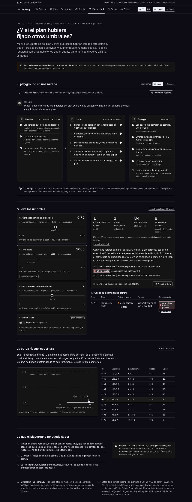
P5 Playground con U2 en 1600 · 380 px · oscuro · ES · líder
docs/diseno/05-playground.html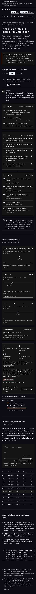
out/es/playground.html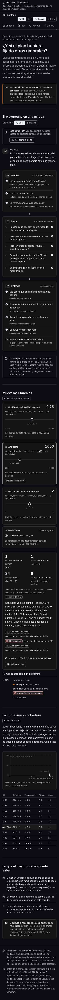
P5 Playground con U2 en 1600 · 1280 px · oscuro · EN · líder
docs/diseno/05-playground.html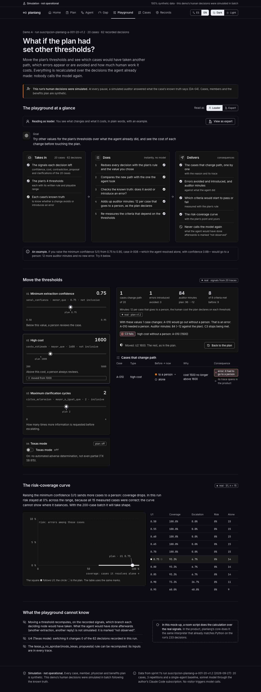
out/en/playground.html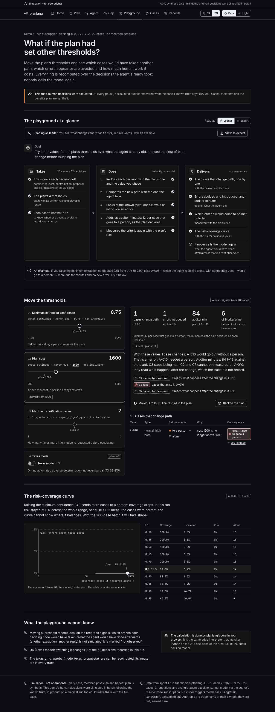
Qué mirar y qué deberías ver
| # | Pantalla | Dónde | Qué hacer | Qué debe verse |
|---|---|---|---|---|
| 1 | P4 Brecha | «El informe en una mirada» | Lee el sello y la frase debajo. | «Cumple con alertas»: se cumplieron los 9 criterios y no ocurrió ninguno de los 8 riesgos; fallaron S3 (varios agentes, más lentos que uno) y 5 respuestas fuera de formato; S1 quedó sin probar. |
| 2 | P4 Brecha | El balance | Pulsa «1 · S3» en la fila de supuestos. | Baja a «Lo que falló», al renglón de S3, con sus casos A-008, A-012 y A-020 enlazados. |
| 3 | P4 Brecha | «Lo que quedó sin probar» | Mira el renglón de S1. | Borde discontinuo y «Sin probar»: el modelo acertó los 15 casos medidos y sin un error no hay con qué medir su confianza. |
| 4 | P4 Brecha | «Se cumplió, con una nota» | Lee el renglón de C3. | Cumple sobre solo 3 casos; con U2 en 1500 deja de cumplirse (A-010 saldría sin persona). Ese 1500 lo calcula el playground, no está escrito a mano. |
| 5 | P4 Brecha | Lo cumplido, renglón R8 | Mira la columna de la derecha. | «0 de 1 sesión»: R8 se cuenta por sesión, no por caso (la maqueta decía «casos»). |
| 6 | P4 Brecha | § 5 Brechas no previstas, pares «experto» | Mira cada falla y la tabla de evaluadores. | Cada falla con su categoría y sus reintentos, y una columna «No evaluables» en los evaluadores: es la deuda M-24 pagada. |
| 7 | P4 Brecha | § 6 Supuestos, S1 | Mira la curva en miniatura. | La curva plana en 0 % con las etiquetas de U1 sin encimarse y el punto del plan en 0,75. |
| 8 | P5 Playground | «El playground en una mirada», como líder | Lee «Un ejemplo». | Subir U1 de 0,75 a 0,90 manda A-008 (confianza 0,88) a una persona: 12 minutos más, ningún error nuevo. Es una medida, no un texto fijo. |
| 9 | P5 Playground | Pares «experto» | Mira la ficha técnica y la regla de decisión. | El orden de evaluación sigue el grafo (enrutador, extractor, aclaracion, decision) y no el alfabeto; la regla muestra los valores que muevas, subrayados. |
| 10 | P5 Playground | Par «U2 en 1600» | Compáralo con la maqueta en el mismo estado. | A-010 pasa a «solo» y es un error; C3 deja de cumplirse. La maqueta decía «8 de 9»; aquí dice «6 de 9» porque C2 y C7 no se pueden medir en A-010: leen lo que pasa después del cambio, que la traza no registró. |
| 11 | P5 Playground | Modo Texas (U4) | En la página, enciéndelo. | Ningún caso cambia, y la lista lo dice: toda propuesta adversa ya pasaba por una persona; abajo, «conmutarlo cambia 0 de las 62 decisiones». |
| 12 | P5 Playground | La curva riesgo-cobertura | En la página, mueve U1. | El cuadro ■ sigue a U1 en la curva y en la tabla; el círculo es el plan. La lectura dice que el riesgo quedó en 0 % porque no hubo errores. |
| 13 | Las dos | Pares «claro» y «en» | Míralos junto a su maqueta. | Los mismos colores que la maqueta en claro; en inglés todo redactado, salvo los nombres del código. |
Mediciones del arnés
- ✓ vitrina P4 Brecha 380 oscuro es lider — sin desplazamiento lateral · fuentes cargadas · consola limpia
- ✓ vitrina P4 Brecha 380 oscuro en lider — sin desplazamiento lateral · fuentes cargadas · consola limpia
- ✓ vitrina P4 Brecha 380 claro es lider — sin desplazamiento lateral · fuentes cargadas · consola limpia
- ✓ vitrina P4 Brecha 380 claro en lider — sin desplazamiento lateral · fuentes cargadas · consola limpia
- ✓ vitrina P4 Brecha 1280 oscuro es lider — sin desplazamiento lateral · fuentes cargadas · consola limpia
- ✓ vitrina P4 Brecha 1280 oscuro en lider — sin desplazamiento lateral · fuentes cargadas · consola limpia
- ✓ vitrina P4 Brecha 1280 claro es lider — sin desplazamiento lateral · fuentes cargadas · consola limpia
- ✓ vitrina P4 Brecha 1280 claro en lider — sin desplazamiento lateral · fuentes cargadas · consola limpia
- ✓ vitrina P4 Brecha 1280 oscuro es experto — sin desplazamiento lateral · fuentes cargadas · consola limpia
- ✓ vitrina P4 Brecha 380 oscuro es experto — sin desplazamiento lateral · fuentes cargadas · consola limpia
- ✓ vitrina P5 Playground 380 oscuro es lider — sin desplazamiento lateral · fuentes cargadas · consola limpia
- ✓ vitrina P5 Playground 380 oscuro en lider — sin desplazamiento lateral · fuentes cargadas · consola limpia
- ✓ vitrina P5 Playground 380 claro es lider — sin desplazamiento lateral · fuentes cargadas · consola limpia
- ✓ vitrina P5 Playground 380 claro en lider — sin desplazamiento lateral · fuentes cargadas · consola limpia
- ✓ vitrina P5 Playground 1280 oscuro es lider — sin desplazamiento lateral · fuentes cargadas · consola limpia
- ✓ vitrina P5 Playground 1280 oscuro en lider — sin desplazamiento lateral · fuentes cargadas · consola limpia
- ✓ vitrina P5 Playground 1280 claro es lider — sin desplazamiento lateral · fuentes cargadas · consola limpia
- ✓ vitrina P5 Playground 1280 claro en lider — sin desplazamiento lateral · fuentes cargadas · consola limpia
- ✓ vitrina P5 Playground 1280 oscuro es experto — sin desplazamiento lateral · fuentes cargadas · consola limpia
- ✓ vitrina P5 Playground 380 oscuro es experto — sin desplazamiento lateral · fuentes cargadas · consola limpia
- ✓ vitrina P5 Playground con U2 en 1600 1280 oscuro es lider — sin desplazamiento lateral · fuentes cargadas · consola limpia
- ✓ vitrina P5 Playground con U2 en 1600 380 oscuro es lider — sin desplazamiento lateral · fuentes cargadas · consola limpia
- ✓ vitrina P5 Playground con U2 en 1600 1280 oscuro en lider — sin desplazamiento lateral · fuentes cargadas · consola limpia
Pasada de interacción (regla 22)
- ✓ Brecha: «Ver como experto»
- ✓ Brecha: balance «1 · S3» → lo que falló
- ✓ Brecha: «Abrir el playground»
- ✓ Playground: U2 → 1600 con el teclado
- ✓ Playground: «Volver al plan»
- ✓ Playground: modo Texas encendido
Generado por node scripts/capturar-vitrina.mjs --mirada p3 sobre el export de pnpm build. Las capturas se regeneran; no se editan a mano.